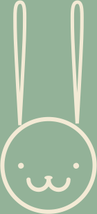

Агентство web и branding решений для бизнеса
→

Наша задача – помочь бизнесу, создавая инновационные и современные решения в сфере дизайна и IT
Публикации
и события

как совладать с перфекционизмом
Запуск курса для digital-специалистов в финском университете
3D в брендинге
как совладать с перфекционизмом
Запуск курса для digital-специалистов в финском университете
3D в брендинге
→
Как я заметил, у многих сайтов дня очень хорошая типографика. Какой ни возьми, почти на каждом будут красивые шрифты, которые правильно передают настроение проекта, создают нужную атмосферу и подчеркивают стиль сайта.
А некоторые победители и вовсе обходятся исключительно типографской работой! И это меня больше всего поражало: как настолько искусно можно сделать сайт на 90% состоящий из одного текста?
Хорошая работа со шрифтами прощает не самый удачный контент, возможные баги или скорость загрузки сайта. Хорошая работа со шрифтами прощает не самый удачный контент, возможные баги или скорость загрузки сайта.